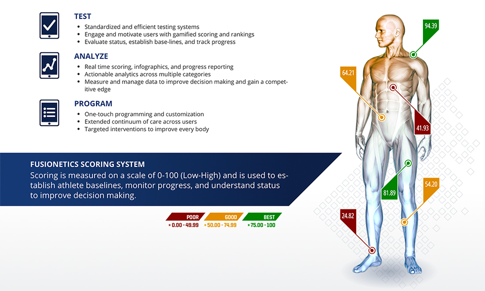
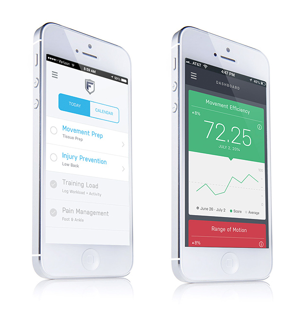

The Fusionetics Performance Healthcare System revolutionizes the way technology is used to turn complex science into simple, efficient and results-oriented applications. The Fusionetics Performance Healthcare System provides integrated training programs designed to address movement efficiency and improve performance capacity.
We critiqued the initial concept, analysing good and bad points. We also gathered external opinions. We explored the current market and created a few initial concepts. We validated our initial ideas. We did this by speaking to potential users gathering their thoughts on this genre of website.
What product or service are we building? What is the problem we want to solve? Who are the customers? What is the target market? We came up with a few ideas which we decided to validate. We created a few problems and gains which we rated based on intensity, field knowledge, interest and time.
Some of the keay features were related to the Color, Voice and the Utility of the application
The use of color within the application revolves around green, red, and yellow, the most immediate communicators of score-based analytics. We utilised bold applications of these colors to create an experience that is engaging even at a glance.
Light blue is used as a “neutral” highlight color throughout the application. Its primary usage is for functions that are actionable but not result-based, so as to not confuse the user with scoring functions.
The brand of Fusionetics is centered in the functional application of its platform and technology. The end game is not to sell shoes or t-shirts, but to deliver an effective, clear, and elegant user experience with its product.
Our approach was to create an environment that is humble but not sterile. We avoided the use of any unnecessary embellishment that could distract from the primary functions of the application, and focused on what we could do with the core components.
Being that Fusionetics is a sports science platform with a clinical application, we’ve held a clear, intuitive user experience as top priority from the beginning.
All of our design decisions have been made in the spirit of enriching the user experience. We have sought to create a design vocabulary for the application that is direct, authentic, and utilitarian. Use of flat colors, clean typography, and open space allows the function of the application to remain front and center.